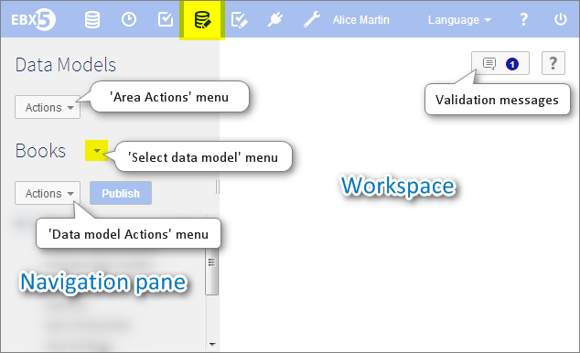

Using the Data Models area user interface
Section contents
Navigating within the Data Model Assistant
Data models can be created, edited or imported, and published in the Modeling > Data Models area. The EBX5 data model assistant (DMA) facilitates the development of data models.

The navigation pane is organized into the following sections:
Configuration | The technical configuration of the data model. |
Included data models | Defines the data models included in the current model. The data types defined in included data models can be reused in the current model. |
Data structure | The structure of the data model. Defines the relationship between the elements of the data model and provides access to the definition of each element. |
Simple data types | Simple reusable types defined in the current data model. |
Complex data types | Complex reusable types defined in the current data model. |
Included simple data types | Simple reusable types defined in an included external data model. |
Included complex data types | Complex reusable types defined in an included external data model. |
Data model element icons


 User guide table of contents
User guide table of contents